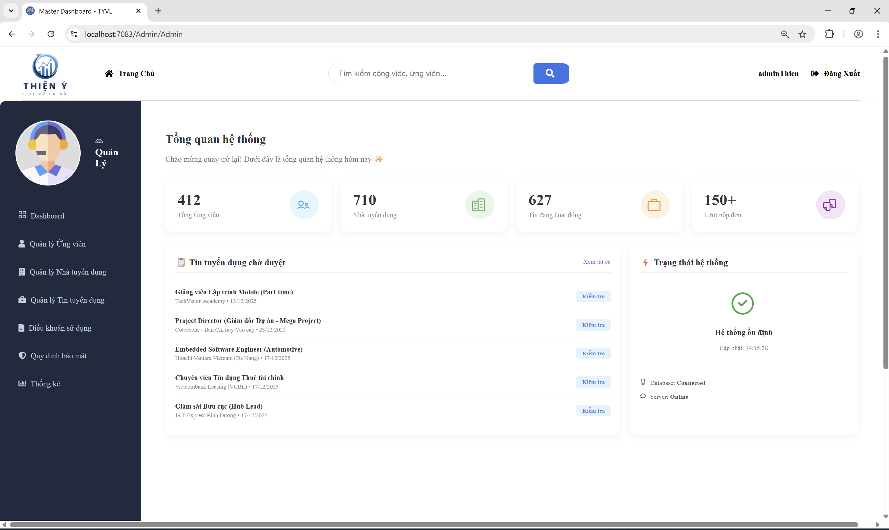
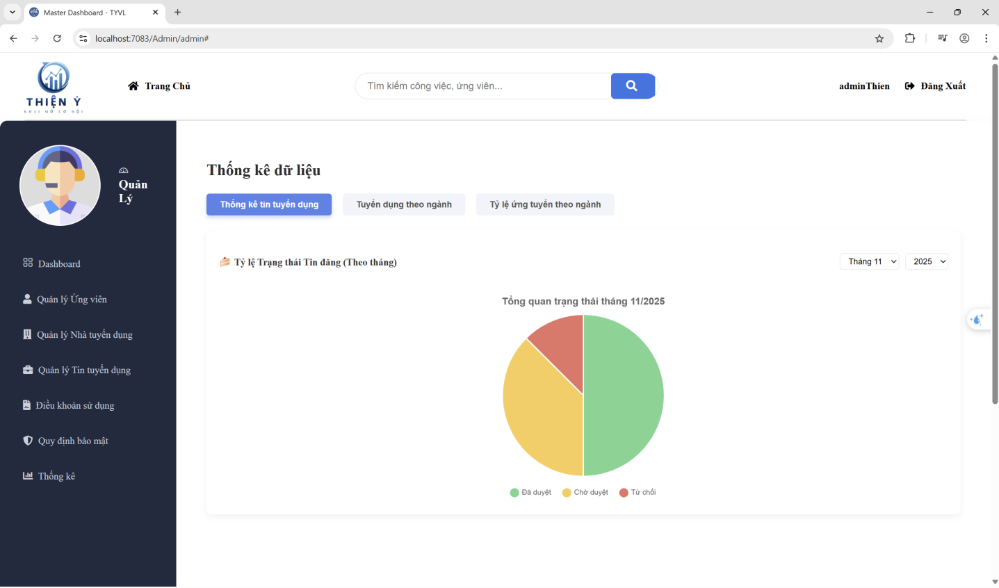
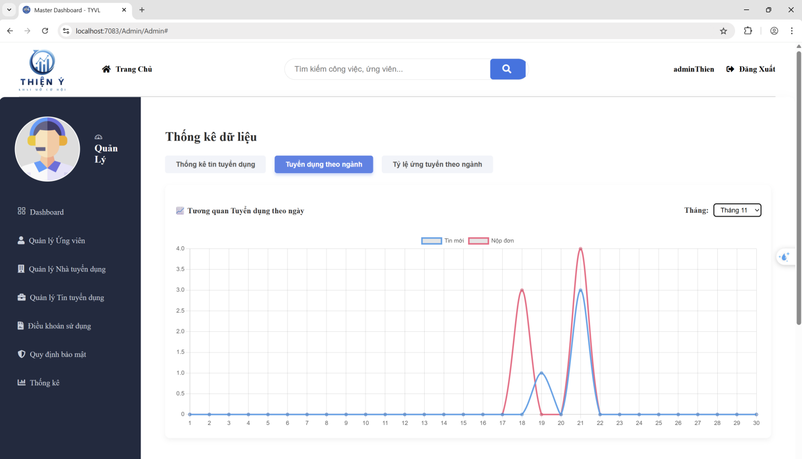
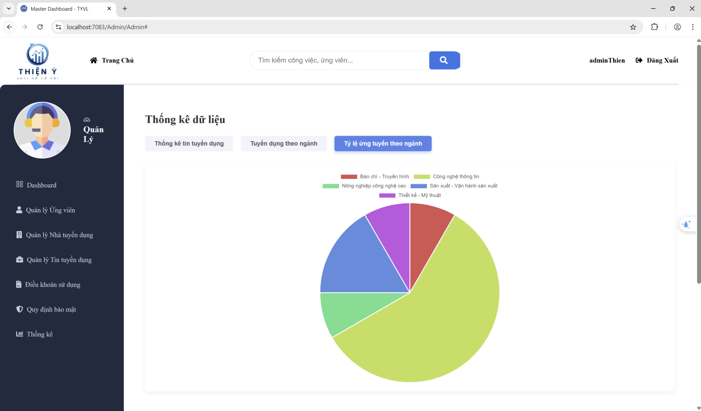

Web Development • System Analytics
Managing a growing recruitment platform ("Thiện Ý") requires a centralized command center. The goal of this project was to design and develop an Admin Dashboard that provides real-time tracking of system health, user growth (both candidates and employers), and interactive charts to analyze job posting workflows and application trends.

The main hub provides administrators with a bird's-eye view of platform activity and operational tasks.

Ensuring the quality and status of job postings is a key administrative task.

Interactive data visualization is used to track the correlation between employer demand and candidate supply.

Understanding which sectors attract the most talent is crucial for targeted marketing and platform growth.